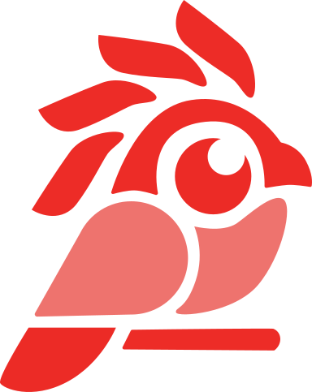

A Mutum faz produto de ponta a ponta — do chip em Verilog ao app do seu cliente, passando por IA, dados, design e marketing. Engenharia feita no Amazonas pra rodar em qualquer lugar.
Quatro frentes, um time só. A gente cuida de ponta a ponta — sem repassar seu projeto pra terceiro.
Interfaces simples, rápidas e que funcionam offline. Pensadas pra quem usa no campo, não só no escritório.
Sistemas B2B, integrações com governo e backends que escalam do piloto à operação estadual.
Painéis, modelos e automações treinados com dados da região — não com médias de outro país.
Hardware de baixo custo + LoRa e 4G. Coleta onde o sinal some e sincroniza quando volta.
Monitoramento de qualidade da água pra comunidades ribeirinhas. Coleta no campo, análise no celular, alerta pro agente de saúde em minutos.
A gente descreve o chip em Verilog, monta a placa, escreve o firmware, conecta na nuvem e entrega o app. Um time só — sem telefone sem fio entre hardware e software.
Lógica digital descrita em Verilog e SystemVerilog, verificada em simulação antes de virar silício.
Prototipagem em FPGA e chips dedicados. Do núcleo RISC-V customizado ao ESP32 e STM32 de prateleira.
Esquemático, layout de PCB e montagem. Placas que aguentam umidade, calor e poeira de verdade.
C e Rust sobre Zephyr ou FreeRTOS. Baixo consumo, atualização remota e boot seguro.
O dado chega mesmo onde o sinal é fraco — ou espera guardado e sincroniza quando a rede volta.
Backend, painel e app pro seu cliente final. A ponta que ele vê, ligada a tudo que veio antes.
Observabilidade, governança e IA aplicada pra times que já rodam em escala — de fábrica a meio de pagamento.
Métricas, logs e traces num lugar só. Alerta antes do cliente perceber — da API ao dispositivo em campo.
Quem acessa o quê, por quê e quando. Catálogo de dados, controle de acesso e modelos auditáveis.
Visão computacional na linha de produção, previsão de demanda e copilotos internos com os seus dados.
Assistentes no WhatsApp e no site, ligados ao seu sistema — resolvem de verdade e passam pro humano quando precisa.
Pesquisa, marca, design e lançamento no mesmo time que escreve o software. Sua ideia sai daqui pronta pra vender.
Entrevista, campo e dados pra achar o problema certo antes de desenhar.
Nome, identidade visual e tom de voz — do logo à embalagem do hardware.
UX, UI, protótipos navegáveis e design system pronto pro time de engenharia.
Site, campanha, conteúdo e motion. Go-to-market medido do primeiro dia.